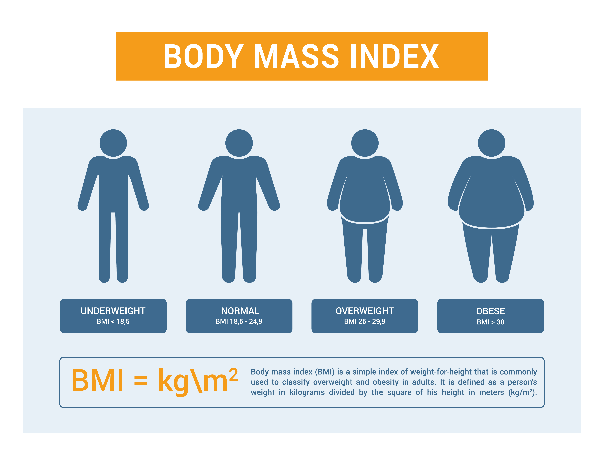

BMI, or Body Mass Index, is a numerical value calculated based on a person's weight and height. It is a widely used tool to estimate whether a person has a healthy body weight for their height. BMI is not a direct measurement of body fat, but it is used as a screening tool to categorize individuals into different weight categories.
The first formula we've listed is the metric BMI formula, using kilograms and meters. The second one is the imperial BMI formula, which uses units of pounds and inches. Converters are available for kilos to stone, kilos to pounds and ounces and pounds, should you need them.
| Measurement System | Formula |
|---|---|
| Metric | BMI = weight (kg) / [height (m)]2 |
| Imperial | BMI = 703 × weight (lbs) / [height (in)]2 |
These simple steps will help you work out your BMI:
For an adult with a height of 180 cm and weight of 75 kg. Our first step needs to be to convert the height into meters. As there are 100 cm in a meter, we divide our figure by 100. This gives us 1.8 m.
Let's plug those figures into our formula:
BMI = 75 ÷ (1.8 × 1.8)
BMI = 75 ÷ 3.24
This gives us a BMI figure of 23.15.
Simple steps to work out your imperial BMI:
For an adult with a height of 5ft 11 inches and weight of 155 pounds (lbs). Step one is to convert the height into inches only. There are 12 inches in a foot, so we simply multiply the 5ft by 12 and then add the 11 inches. This gives us a total of 71 inches.
Let's plug those figures into our formula:
BMI = 703 × (155 ÷ (71 × 71))
We do the multiplication inside the brackets first:
BMI = 703 × (155 ÷ 5041)
And then...
BMI = 703 × 0.030747867
This gives us a BMI figure of 21.62.
| BMI Range | BMI Category |
|---|---|
| Less than 15 | Very severely underweight |
| Between 15 and 16 | Severely underweight |
| Between 16 and 18.5 | Underweight |
| Between 18.5 and 25 | Normal (healthy weight) |
| Between 25 and 30 | Overweight |
| Between 30 and 35 | Moderately obese |
| Between 35 and 40 | Severely obese |
| Over 40 | Very severely obese |